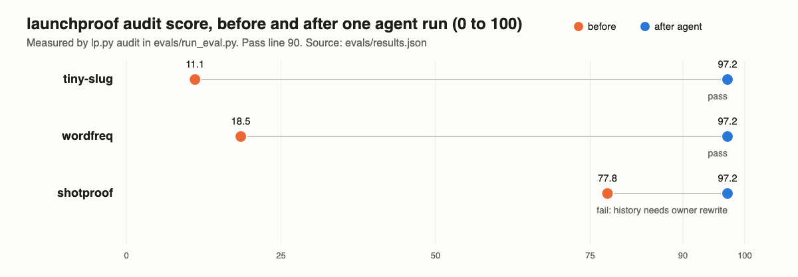

Make a finished project public-ready on GitHub, then plan its launch
launchproof is a Claude Code and Codex plugin. It scans your whole git history for personal emails, home paths, secrets and private names, writes an evidence-backed README and the files a trustworthy repo needs, scores the result and fixes gaps, then drafts posts for every launch channel. You approve every push and post.
Install
Claude Code
claude plugin marketplace add deserteaglemj/launchproof
claude plugin install launchproof@launchproofCodex
codex plugin marketplace add deserteaglemj/launchproof
codex plugin add launchproof@launchproofThen run /launchproof in your project folder, or ask "make this repo ready to publish on GitHub". Needs Python 3.9 or newer; no API key.
How it works
- Hygiene scan of every commit you will publish: non-noreply author emails, personal emails, home paths, 10 secret patterns, key files, your private names, and images to review.
- Proof: runs your tests and evals and publishes the numbers in a results file.
- Scaffold missing files: community health files, CI, CHANGELOG, release notes, llms.txt, AGENTS.md, this kind of Pages site with JSON-LD and Open Graph, topics and a social preview.
- README with a demo, quickstart, sourced comparison, limitations and an FAQ written as the questions people ask AI assistants.
- Launch plan with dated steps and a draft for Show HN, Reddit, X, LinkedIn, Product Hunt, Dev.to, Discord, awesome lists, plugin directories and newsletters.
- Audit and fix until the 0 to 100 checklist scores 90 or more, then a report with the owner-approval commands.
Results
Each case is rebuilt from scratch and run headless with push, history rewrites and web access denied. The harness measures the score; it does not trust the agent's report.

| Case | Before | After agent | Final | Result |
|---|---|---|---|---|
| wordfreq | 18.5 | 97.2 | 100.0 | pass |
| tiny-slug | 11.1 | 97.2 | 100.0 | pass |
| shotproof | 77.8 | 97.2 | 97.2 | fail* |
wordfreq (Python CLI) and tiny-slug (JavaScript library) are fixtures with seeded emails, paths, keys and a client name in their history; final is after the owner-approved rewrite. shotproof is a real public repo. *It fails because a private name in its public history needs an owner rewrite.
Method, limits and the failed first round: evals/RESULTS.md.
FAQ
Does launchproof push or post anything for me?
No. Pushing, making a repo public, releases, Pages, topics, history rewrites and every launch post come back as commands for you to approve and run.
How do I check my git history for personal emails and secrets before open sourcing?
Run lp.py hygiene . --rev main from the plugin's scripts folder, or ask the agent to audit the repo. It checks every commit on that branch, including files deleted later.
Is there a README generator for Claude Code or Codex that needs no API key?
Yes. launchproof runs on the model your agent already uses, with a standard-library Python helper.
What are its limits?
The audit checks structure and evidence links, not writing quality; the secret scan has 10 patterns (it runs gitleaks too when installed); history fixes need you; the eval set is small.